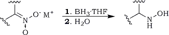
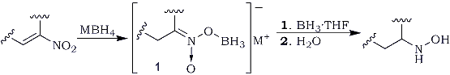
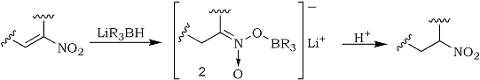
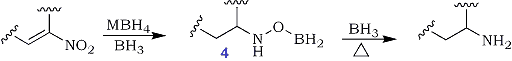
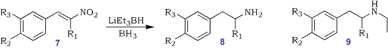
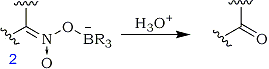

Abstract
Conjugated nitroalkenes are readily reduces by a variety of borane and borohydride reagents. The reactions provide a convenient access to a number of nitrogen and oxygen basad functional groups.
Aliphatic nitro compounds have proven to be valuable precursors to a wide variety of building blocks and intermediates in organic synthesis1-7. The reduction of conjugated nitroalkenes provides easy access to a vast array of functionalities including nitroalkanes8, N-substituted hydroxylamines9, amines10, ketones11,12 oximes13, α-substituted oximes14 and ketones15. Our interest in nitroalkenes originated during a program which was focused on the synthesis of radiolabeled amphetamine derivatives16.
Eq. 1
We were prompted to explore the reduction of nitroalkenes using boron reagents due to our failure to obtain clean reaction products from nitroalkenes using conventional reduction procedures and by the report that nitro salts (nitronates) are readily reduced to hydroxy-amines by borane complexes17 (Eq 1).
Preparation of Nitroalkanes
Eq. 2
A number of reagents have been used to affect nitroalkene to nitroalkane transformations18. Generally there is loss of product due to dimerization caused by the addition of the nitronate intermediate to another molecule of nitroalkene (via a Michael addition). During our studies, we discovered that the reduction of α,β-unsaturated nitroalkenes by boranes produced high yields of hydroxylamines9; presumably formed via the nitronate intermediate, 1 (Eq 2).
Eq. 3
We envisioned that protonolysis of intermediate 1 would produce the corresponding nitroalkane if it could be intercepted before complete reduction had occurred. Since trialkylborohydrides can be used to deliver a single hydride to α,β-unsaturated carbonyl compounds19, we explored their use in reductions of nitroalkenes and found that both lithium triethylborohydride and tri-sec-butylborohydride cleanly reduced conjugated nitroalkenes20 to the desired nitronate 2 (Eq 3). The protonolysis could be carried out in a variety of ways but the most efficient method involved the use of ordinary silica gel (65-81%), rather than conventional dilute acids.
We also discovered, a manipulatively simple approach to nitroalkanes utilizing sodium borohydride in a mixed solvent system of methanol and tetrahydrofuran. Methanol apparently reacts with sodium borohydride to form the active methoxyborohydride species (confirmed by 11B NMR spectroscopy) which then effectively reduces the nitroalkenes8. Gradual addition of sodium borohydride, at room temperature, to the nitroalkene solution in this mixed solvent system, provided clean reaction products (62-82%). Recently, the method was extended through the use of sodium borohydride supported on an ion exchange resin22.
Preparation of N-Substituted Hydroxylamines and Amines
Table I.
Reduction of a,b-unsaturated Nitroalkenes to Nitroalkanes
| Nitroalkene | Product | Yielda
(%) |
||
A |
B |
C |
||
| 1-Nitrocyclohexene | Nitrocyclohexane | 69 |
62 |
80 |
| 1-Phenyl-2-Nitroethene | 1-Phenyl-2-Nitroethane | 78 |
64 |
- |
| 1-Phenyl-2-Nitropropene | 1-Phenyl-2-Nitropropane | 89 |
82 |
80 |
| 1-(3,4-Diethoxyphenyl)- 2-Nitropropene |
1-(3,4-EtO-Phenyl)- 2-Nitropropane |
69 |
75 |
83 |
| 1-(3-MeO,4-OH-Phenyl)- 2-Nitropropene |
1-(3-MeO,4-OH-Phenyl)- 2-Nitropropene |
65 |
69b |
- |
A Trialkylborohydride Reduction
B NaBH4 in mixed MeOH-THF solvents
C NaBH4 supported on an ion exchange resin
a Isolated and unoptimized
b Two equivalents of NaBH4 were used; the
pH was adjusted to ~8 before work-up
N-Substituted hydroxylamines are obtainable by oxidation of amines23,24 or by reduction of oximes25-27, nitroalkenes28,29 and nitro salts17. In the case of nitro salts (Eq 1), reactions presumably proceed via a common nitronate intermediate, 1, which can then be reduced by borane to yield hydroxylamines after hydrolysis. Indeed, sodium borohydride catalyzed the reaction of borane complexes with conjugated nitroalkenes9. This straightforward approach afforded pure hydroxylamines from nitroalkenes in high yields (70-85%). (Table II). Subsequent modification30 by in-situ generated borane in tetrahydrofuran (from NaBH4 and BF3-Et2O), obviated the need for preformed BH3-THF which is not universally available.
Alkylamines are generally accessible via the reduction of nitroalkenes by lithium aluminum hydride28,31-33. Catalytic hydrogenation29 has also been used on occasion with limited success.
Table II.
Hydroxylamines from Nitroalkenes
| Nitroalkene | Product | Yield* |
mp |
| 1-Nitrocyclohexene | N-OH-Cyclohexylamine | 78% (85) |
135-137°C |
| 1-Phenyl-2-Nitroethene | N-OH-2-Phenethylamine | 79% (80) |
84-85°C |
| 1-Phenyl-2-Nitropropene | N-OH-Amphetamine | 72% (74) |
59-60°C |
| 1-(4-Bromophenyl)-2-Nitropropene | N-OH-4-Bromo-Amphetamine | 68% (78) |
61-62°C |
| 1-(2,3-Dimethoxyphenyl)-2-Nitropropene | N-OH-2,3-Dimethoxy-Amphetamine | 63% (70) |
65-66°C |
* Isolated and unoptimized yields.
Yields in parentheses were obtained using a 2.5M BH3-THF solution.
Eq. 4

Since earlier studies34 demonstrated that hydroxylamines, as well as their precursor oxime derivatives, are reduced by diborane to amines at elevated temperatures (105-110°C), we decided to investigate the reaction of boron esters of hydroxylamines, 4, to amines (Eq 4)10.
It was found that excess borane reduced the nitroalkenes to amines in the presence of a catalytic amount of sodium borohydride (85-90%). The reaction which generally takes six days at room temperature, can be accelerated by raising the temperature. The reaction can also be achieved in comparable yields, utilizing in-situ generated BH3-THF35.
Table III.
Reduction of Nitroalkenes
(A) with BH3-THF/NaBH4(cat.) (B) in situ generated BH3-THF
| Nitroalkene | Product | Yield* |
mp, HCl salt |
|
(A) |
(B) |
|||
| 1-Nitrocyclohexene | Cyclohexylamine | 89% (84) |
74% |
207°C |
| 1-Phenyl-2-Nitroethene | 2-Phenethylamine | 88% (82) |
75% |
215-216°C |
| 1-Phenyl-2-Nitropropene | Amphetamine | 91% (86) |
85% |
146-147°C |
| 1-(4-Bromophenyl)-2-Nitropropene | 4-Bromoamphetamine | 85% (79) |
79% |
202-203°C |
| 1-(3,4-Dimethoxyphenyl)-2-Nitropropene | 2,3-Dimethoxyamphetamine | 87% (82) |
78% |
139-140°C |
| * Yields in parentheses are for the HCl salts. | ||||
Table IV
Reduction of Nitroalkenes
(7) to N-Ethylamines (9)
| Substituents | Isolated Yield |
mp (HCl) | ||
R1 |
R2 |
R3 |
||
H |
H |
H |
78% |
141-142°C |
Me |
H |
H |
64% |
183-185°C |
H |
Br |
H |
56% |
172-174°C |
Me |
EtO |
EtO |
62% |
130°C |
During the course of the investigations involving the reaction of borohydrides with conjugated nitroalkenes, we observed the consistent formation of N-ethylamines as by-products in reactions utilizing lithium triethylborohydride (Eq 5). Interestingly, N-alkylated products were not produced when other alkylborohydrides were used. This formation of N-ethylated products led us to the conclusion that a Grignard-like addition reaction between the alkylborane and the nitroso intermediate was occurring, this was confirmed by the production of N-ethylated products 11 and 12 from 1-phenyl-2-nitrosopropane 1037. Lithium triethylborohydride serves as a source of triethylborane. Experiments involving the reaction of the more sterically demanding, potassium tri-sec-butylborohydride, produced only primary amines, 8 indicating that the competition between reduction and alkylation of the nitro group is sensitive to steric effects. A series of N-ethylated amine derivatives were prepared using the trialkylborohydride reaction (Table VI).
Eq. 5
Preparation of Carbonyl Compounds (Modified Nef Reaction)
The formation of the nitronate intermediate, 2, affords an entry into carbonyl compounds. In essence, it constitutes a modified Nef reaction upon hydrolysis. We were able to convert a series of α,β-unsaturated nitroalkenes to the corresponding ketones by reducing them with trialkylborohydrides and then hydrolyzing the corresponding nitronates11 (Eq 6). Carbonyl compounds can also be prepared by first reducing the nitroalkenes to oximes (vide infra), followed by hydrolysis39,40.
Eq. 6
Eq. 7
Preparation of oximes
Nitroalkenes can be reduced by a wide variety of agents41. We have found that tin chloride42,43, chromium chloride44, and phase transfer reductions45 are particularly useful. Tin chloride can be used, for example, to prepare either β-substituted43 or unsubstituted oximes46 depending on the solvents utilized (Eq 7).
Conclusion
Although our original interest in nitroalkene chemistry was focused on a single goal, the reduction of unsaturated nitroalkenes proved to be an exciting challenge. It is clear they are valuable precursors to a variety of intermediates, some of which are summarized here.
Experimental
Synthesis of Nitroalkanes
Method (A)
The reduction of β-methyl-β-nitrostyrene is representative of the procedure employed. Lithium tri-sec-Butylborohydride (4.5 mmol, 4.5 ml of a 1.0M solution) was placed in a 100 ml flask, equipped with a septum inlet and a magnetic stirring bar. ß-Methyl-ß-nitrostyrene in THF (0.4 mmol, 0.65 g in 5 ml of THF ) was added dropwise to the stirred solution of the trialkylborohydride at room temperature. A mildly exothermic reaction ensued with the disappearance of the yellow colorations (nitroalkene). The reaction mixture was stirred for 30 min., cooled to 0°C, and then silica gel (10 g) was added in 4 portions. The mixture was washed with ether (5x50 ml) to remove the adsorbed 2-nitro-1-phenylethane from the silica gel. The ethereal solution was washed with concentrated ammonium hydroxide, water, dried over anhydrous MgSO4, and the solvent removed under reduced pressure. The crude product was purified by column chromatography (silica gel, 2% ether/petroleum ether eluant) to yield 0.53 g (81%) of 2-nitro-1-phenylethane20.
Method (B)
ß-Methyl-ß-nitrostyrene (2 mmol, 0.33 g) was weighed in a 50 ml Erlenmeyer flask containing a magnetic stirring bar and then 10 ml of a mixed solvent system of THF-methanol (10:1, v/v) was added at room temperature. Sodium borohydride (2.5 mmol, 0.095 g) was then added, in 4 portions, to the well stirred solution. A mildly exothermic reaction ensued with the gradual disappearance of the yellow coloration (nitroalkene). The reaction mixture was stirred for 40 min. at room temperature and then quenched with water (20 ml). The product was isolated (82%) as described above (vide supra).
Method (C)
The preparation of 2-(2-nitropropyl)-thiophene is representative of the procedure employed. 2-(2-Nitropropenyl)-thiophene (2 mmole, 0.338 g) was dissolved in methanol (40 ml) in a 100 ml Erlenmeyer flask containing a magnetic stirring bar. Borohydride supported ion exchange resin (2.2 mmol, 0.88g)22 was then added at room temperature to the well stirred solution. A mildly exothermic reaction ensued with the gradual disappearance of the yellow coloration (nitroalkene). The reaction mixture was stirred for 60 min. at room temperature and then the resin was filtered off, washed twice with methanol (10 ml x 2). Removal of methanol under reduced pressure yielded 0.265 g (78%) of pure 2-(2-nitropropyl) thiophene as an oil22.
Synthesis of N-Substituted Hydroxylamines
Method (A)
The synthesis of N-hydroxy-2-phenylethanamine is representative of the procedure employed. A flame-dried, nitrogen-flushed. 250 ml, flask, equipped with a septum inlet, magnetic stirring bar, and reflux condenser was cooled to 0°C. A BH3.THF solution (10 mmol 4.0ml of a 2.5M) was injected into the reaction flask via a syringe, followed by the slow addition of a solution of β-nitrostyrene in THF (10 mmol, 1.5 g in 20 ml of THF). After the addition, the ice bath was removed and a catalytic amount (~30 mg) of NaBH4 was added to the stirred reaction mixture by means of a spatula. A moderately exothermic reaction ensued. The reaction was allowed to proceed until the yellow color of the starting material disappeared (1 h). Ice-water (100 ml) was added to reaction mixture that was then acidified with 10% HCl (~20 ml). The mixture was stirred, heated at 60-65°C for 2 h. and then cooled to room temperature. The acidic layer was washed with ether (3x50 ml) and then the hydroxylamine liberated via the addition of sodium hydroxide (aqueous). Solid NaCl was added and the product extracted into ether. The combined ethereal extracts were dried over anhydrous MgSO4 and the solvent removed under reduced pressure to yield 1.1 g (80%) of N-hydroxy-2-phenylethanamine9.
Method (B)
The synthesis of N-(hydroxyphenyl)ethylamine is representative. A flame-dried, nitrogen-flushed, 100 ml flask, equipped with a septum inlet, magnetic stirring bar and reflux condenser was cooled to 0°C. Sodium borohydride (6.3 mmol, 0.24 g) was placed in the flask followed by sequential addition of THF (10 ml) and BF3.Et2O (8 mmol, 1 ml) at 0°C. After the addition, the ice bath was removed and the contents were stirred at room temperature for 20 min. The solution of ß-nitrostyrene in THF (2 mmol, 0.3 g in 5 ml THF) was then injected into the reaction flask via a syringe. The reaction was allowed to proceed at room temperature for 1 h and quenched by the careful addition of ice (5 g). Most of the THF was removed on a rotary evaporator, the reaction mixture acidified (1N HCl, 20 ml) and then heated at 80-90°C (oil bath) for 2 h. After cooling to room temperature, the product was isolated (79%) as described in method A.
Synthesis of Alkylamines
Method (A)
The synthesis of β-phenylethylamine is representative. A flame-dried, nitrogen-flushed, 100 ml flask, equipped with a septum inlet, magnetic stirring bar and reflux condenser was cooled to 0°C. A BH3-THF solution (16 mmol, 9.5 ml of 1.7 M) was injected into the reaction flask via a syringe, followed by the slow addition of a solution of β-nitrostyrene in THF (4 mmol, 0.6 g in 6 ml THF). After the addition, the ice-bath was removed and a catalytic amount (~40 mg) of NaBH4 was added to the stirred reaction mixture by means of a spatula. A moderately exothermic reaction ensued. The reaction was then allowed to proceed for 6 days at 25°C. The reaction mixture was poured on to ice-water mixture (50 ml), acidified with 10% HCl (~20 ml) and then stirred at 60-65°C for 2 h. After cooling to room temperature, the acidic layer was washed with ether (2x50 ml), and then the β-phenylethylamine was liberated via the addition of aqueous sodium hydroxide. Solid NaCl was added and the product extracted into ether (3x50 ml). The combined ethereal extracts were dried over anhydrous MgSO4 and the solvent removed under reduced pressure to yield 0.43 g (88%) of β-phenylethylamine10.
Method (B)
The synthesis of β-phenylethylamine is representative of the procedure employed. A flame-dried, nitrogen-flushed, 100 ml flask, equipped with a septum inlet, magnetic stirring bar and reflux condenser was cooled to 0°C. Sodium borohydride (9.5 mmol, 0.36 g) was placed in the flask followed by sequential addition of THF (13-15 ml) and BF3-Et2O (12 mmol, 1.5 ml) at 0°C. After the addition, the ice bath was removed and the contents were stirred at room temperature for 15 min. The solution of β-nitrostyrene in THF (2 mmol, 0.3 g in 5 ml THF) was then injected dropwise into the reaction flask via a syringe and the reaction mixture refluxed on an oil bath for 5.5 h. After cooling to room temperature, the reaction was quenched by careful addition of water (25 ml), the mixture acidified (1N HCl, 25 ml), and then heated at 80-85°C (oil bath) for 2 h. After cooling to room temperature, the product was isolated (75%) as described in method A.
Reduction of Nitroalkenes with Lithium Triethylborohydride (Superhydride) and Borane
The reduction of β-methyl-β-nitrostyrene with superhydride (LiEt3BH) and borane (BH3) is representative. Into a flame-dried, nitrogen-flushed, 100 ml flask, equipped with a septum inlet, magnetic stirring bar, and reflux condenser was added a solution of LiEt3BH (10.5 mmol, 10.5 ml) via a syringe, followed by the addition of a solution of β-methyl-β-nitrostyrene (7 mmol, 1.4 g in 5 ml of THF). After the addition, the reaction mixture was stirred at room temperature for 1 h. Excess BH3.THF (23 mmol, 28 ml) was then added and heated at 60-70°C for 15 h. The mixture was poured into ice water and acidified to pH 2. The mixture was stirred and heated at 60-65°C for 2 h and then cooled to room temperature. The acidic water layer was washed with ether (3x30 ml) and the pH adjusted to 7-8 and washed once again with ether (3x30 ml) to remove N-hydroxylamphetamine. The pH was then adjusted to 10 and the product extracted into ether (3x30 ml) and dried (MgSO4). The solvent was removed under reduced pressure to yield 0.73 g (64%) of N-ethylamphetamine. The hydrochloride salt was prepared and recrystallized from an ether/ethanol (20:1) mixture: mp of hydrochloride salt 141-142°C37.
Reduction of ß-Methylphenethylnitronate with Triethylborane and Borane
Into a flame-dried, nitrogen-flushed, septum-capped, round-bottomed flask fitted with a reflux condenser and a magnetic bar was placed β-methylphenethylnitronate (2 mmol, 342 mg)17, 6 ml of THF, and triethylborane (1.0 M solution in THF, 4 mmol, 4 ml). The reaction mixture was stirred at room temperature overnight. BH3.THF (14 mmol, 14 ml, of a 1 .0 M solution) was then added and the mixture heated at 60-70°C for 20 h. After cooling, the mixture was poured onto ice water, acidified to about pH 2, and heated at 60-70°C for 2 h. The water solution was worked up as described earlier to yield 0.14 g of N-ethylamphetamine.
Reaction of 1-Phenyl-2-nitrosopropane Dimer with Triethylborane
Into a flame-dried, nitrogen-flushed, septum-capped, round-bottomed flask fitted with a reflux condenser and a magnetic bar was placed 1-phenyl-2-nitrosopropane dimer38 (1 mmol, 0.03g), followed by 6 ml of dry THF and Et3B (2 mmol, 2 ml of a 1.0 M solution). The mixture was stirred at room temperature overnight and then heated at 60-70°C for 8 h. The solvent was removed to yield an oil which was purified by column chromatography (petroleum ether/ether 3:1). The reaction yield was 0.22 g (61%) of N-ethyl-N-hydroxylamphetamine37.
Synthesis of Phenylacetone (Modified Nef Reaction)
Lithium tri-sec-butylborohydride (11 ml of a 1.0 M solution in tetrahydrofuran; 11 mmol) was placed in a flame-dried, nitrogen-flushed, 100 ml flask equipped with a septum inlet and a magnetic stirring bar. A solution of 2-nitro-1-phenylpropene (1.63 g, 10 mmol) in tetrahydrofuran (10 ml) was added dropwise to the stirred solution of the trialkylborohydride at room temperature. A mildly exothermic reaction ensued with the disappearance of yellow coloration (nitroalkene). The mixture was stirred for 30 min and then poured onto cold (-10°C) 4N sulfuric acid (50 ml). Ice/water (100 ml) was carefully added to the mixture which was stirred for 10 min. The product was extracted with ether (3x50 ml). The combined ether extracts were washed with water (2x50 ml), dried with MgSO4, and evaporated under reduced pressure. The crude product was purified by column chromatography (silica gel; 4% ether/petroleum ether eluant) to give phenylacetone as an oil; yield: 1.1 g (80%); mp of semicarbazone: 187-188°C11.
Synthesis of oximes - General Procedure
The synthesis of 9-anthracenylacetaldoxime is representative. β-(Nitrovinyl)anthracene (1.25 g, 5 mmol), SnCl2·2H2O (2.25 g, 10 mmol) and ethyl acetate (25 ml) were placed in a 50 ml Erlenmeyer flask and the mixture stirred at room temperature. A mildly exothermic reaction ensued which was accompanied by the gradual disappearance of the yellow coloration (nitroalkene). The reaction mixture was carefully poured into ice water and the solution made slightly basic (pH 7-8) by addition of 5% aqueous sodium bicarbonate. The product was extracted into ether, washed with brine, dried (Na2SO4) and the solvent removed under reduced pressure to yield essentially pure E/Z mixture of 9-anthracenylacetaloxime, mp 177-180°C; (1.05 g, 90%)46.